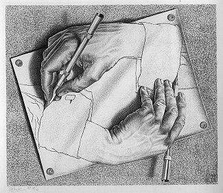

Self-Defeating Methods in Self-Improvement
by phil on Wednesday Dec 5, 2012 8:43 PM

One of the paradoxes of self-improvement, is that many methods require the undoing of the motivation that spawned the method in the first place. For example, let's say you want to improve your social skills. You may try for years with different techniques, such as positive affirmations or social comportment practice, but find that nothing seems to work. In some ways, you may find the effort to be counter-productive as it could re-enforce your social anxieties.
You may then, out of desperation, come up with a novel solution: accept your social skills. The result is that you are more at peace with yourself, which improves your self-confidence, and therefore your social skills. At the same time, though, your motivation to improve your socials skills is weakened, which could theoretically reduce your motivation to accept your social skills (since you were accepting yourself to improve your social skills.)
It seems that most self-improvement solutions involve changing the hand that changes, like that Escher lithograph of a hand drawing a hand. Most solutions involve re-configuring the same motivating forces that made you seek the self-improvement in the first place. If it wasn't recursive, though, it would just be called "improvement" and belong in a different section of the bookstore, like public speaking or legal self-representation. And if it wasn't so challenging, people would just will themselves to be different, and there would be no reason for self-improvement literature.